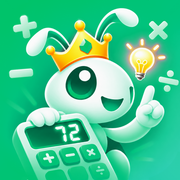

Mental Math · Support
Answers to common questions about Mental Math for Learners and Mental Math for Teachers.
What is the difference between the two apps?
Mental Math for Learners is free: lessons for 80 tricks, practice with hints, 20 fixed timed contests and your progress. Mental Math for Teachers has all of that, plus random contests of up to 1000 problems and 60 minutes, and exports any contest as a printable PDF test paper and answer key.
How do I type a fraction, a mixed number or a negative answer?
Use the app's own keypad: it has keys for the fraction bar, the space in a mixed number, the decimal point and the minus sign. Fractions are accepted in lowest terms.
How is a contest scored?
You choose the points for a correct answer, a wrong answer and a skipped problem before you start. A problem left blank before your last answer counts as skipped; problems after your last answer were not reached and do not count. Estimation problems accept any answer within a range around the exact value.
How do I make and print a test? (Teachers)
Open Contest, tap Random, and set the number of questions and minutes. New problems draws a different test. Tap Export next to Start, choose the layout and the paper size, then Test paper or Answer key, and print or save the PDF from the share sheet. Fixed contests can be exported the same way.
How do I match a paper with its answer key? (Teachers)
Every page of the paper and of the key shows the same test ID. The same contest settings always give the same problems until you tap New problems, so you can export the key later.
How do I start my statistics again?
Open Progress and tap Reset progress. This forgets all practice statistics and contest scores.
I deleted the app and my progress is gone.
Progress is kept only on your device and is not copied anywhere, so deleting the app removes it.
Does Mental Math for Teachers work on my other devices?
Yes, on every iPhone and iPad signed in with the same Apple Account, at no extra cost. Download it again from the App Store's Purchased list.
How do I ask for a refund?
Refunds are handled by Apple: visit reportaproblem.apple.com.
Contact
Questions or problems? Write to support@dailynumbergames.com. Please say which app you use.